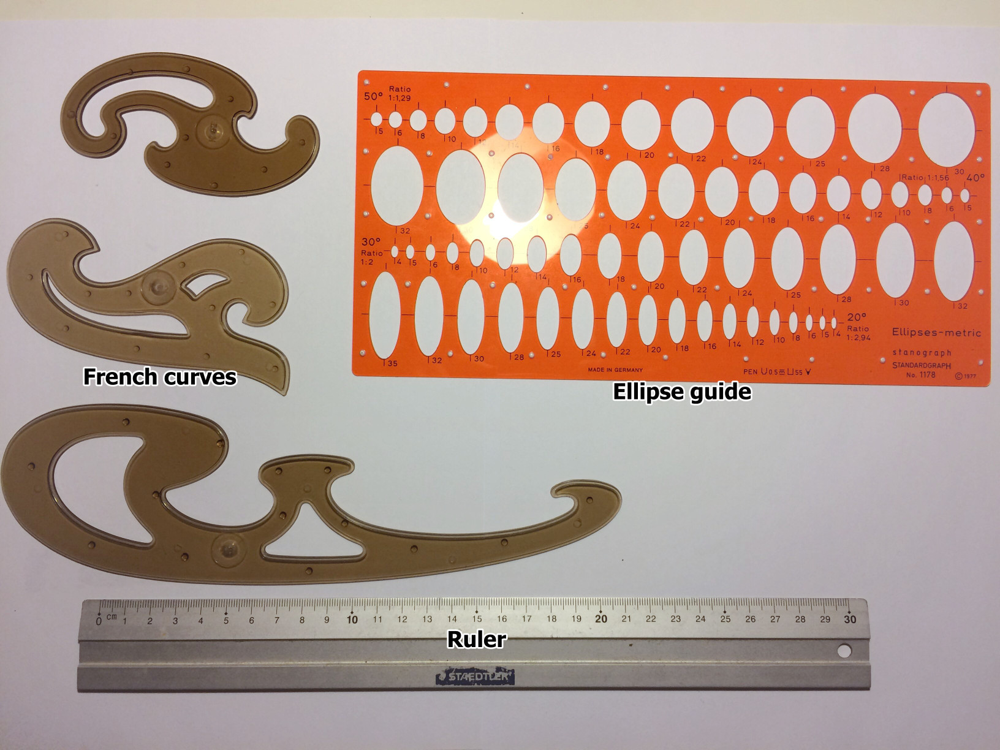

Traditional drawing-tools
The Tools
There is an endless amount of ways to draw and just as many different tools to use. I want to introduce some of the tools commonly used by traditional artists for drafting and inking. While a lot of work these days is done on PC in different applications for digital art learning and working with traditional tools is still viable and arguably has some advantages over digital tools, especially for the learning artist.
In addition to this, traditional tools are still very present in the Manga industry, often used in concert with digital tools to finalize and clean up the artwork.
Paper
First of, a short overview on Paper. There are four characteristics that are important for us to look at.
-
Grammage
The Grammage describes how thick paper is and usually given in g/m2. Heavier paper can resist rougher usage, like repeated erasing. Heavier paper is less likely to crimp and can hold more moisture. This is great when using watercolors, making certain techniques like wet in wet painting easier. On the flipside heavy paper is troublesome to use with markers, as it needs a lot of ink to saturate the paper.
-
Surface structure
We have three basic options to choose from.
Hot pressed, which creates a very smooth surface and lends itself to mixed media approaches. If you don’t want the paper texture to show through, this is your choice.
Cold pressed paper has more Texture and the ’typical’ surface finish for watercolour paper.
Lastly rough paper, which as the name suggests has a very pronounced surface structure that will show in the final image. It is also considered the hardest to work with for beginners. -
Colour
You might want to consider using a toned paper for sketching, as it allows to actively draw highlights, which is not as straight forward on white paper. Controlling highlights is an easily overlooked skill, even though it’s a easy way to sell the three dimensional form of a subject better. Using toned paper can help a lot to learn this skill in a more natural way.
Most toned papers have a light brown or beige color, similar to a lighter skintone making sketches of people look very organic. But there are all possible shades available, mess around with different colors and see what you can do with them!
-
Surface treatment
Most papers are left ”as is”, only the compressed cellulose, but there are some exceptions. Notably Marker Paper. As mentioned before, you rather want to avoid using heavy paper when using Markers, to save on ink (and money). But thinner paper crimps easier and ink bleeds through heavily. Markerpaper uses a special coating that mostly prevents bleeding, as such makes it possible to keep the paper light, while alcohol doesn’t crimp paper as easily compared to water.
For general sketching I recommend to stick to plain printer paper. As sketches are intended as disposable, investing in expensive paper here isn’t the best move.
For ink-work, Watercolour and Gouache Bristol paper is a good choice. It’s heavy, hot pressed paper that can take some abuse and is almost impossible to crimp with watercolour (at least I never managed to crimp bristol paper that way).
Sketchbooks
Most artists have (multiple) [unused] sketchbooks to draw in, instead of loose sheets of paper. sketchbooks come in a multitude of shapes, sized at different pricepoints. If you want, you can spent a lot of money on a sketchbook. I’ll discuss some of the more important features of sketchbooks here.
-
Binding - Holding it all together
Ringbindings are made of metal or plastic which allows the paper to be turned freely, as well as to remove individual pages from the notebook. A feature very handy at times. Keep in mind the individual pages can move against each other when carrying these around, so pencil or charcoal sketches have a chance to smudge over time in these.
Thread stiching is also seen often, with these a thread is used alongside a textile on the back of the books body. This binding keeps the pages much tighter and removing pages takes quite a bit of effort, or leaves a stump in the sketchbook.
Lastly staple binding, here the paper is simple folded in the middle and held together by staples along the fold.
-
Cover
Covers come in two varieties, hardcover and softcover. Hardcover is usually a rigid page of carboard. Hardcovers support the paper in the book, so you don’t rely on a flat surface to place the sketchbook on to draw, or carry a clipboard with you.
Softcovers are the opposite, a sheet of slightly thicker paper for the first and last page. If you want to use them on the go, make sure you draw somewhere you can place it, or carry a clipboard.
-
Price
As mentioned, it’s easy to spend a lot of money on a sketchbook, but also get them for very little money. But why do I make this it’s own category?
It’s very easy and just as common for artists to have a sketchbook where they ”only draw super good artwork in” - which they also never feel ready for, in fear of messing up the entire sketchbook with one bad work. As such it just sits there, menacingly. Mocking you for spending 60 $ (... and possibly more) on a stack of paper you don’t use.
To avoid this you can do two things; Change your mindset about what a Sketchbook is supposed to be. It’s a SKETCHbook after all, not an ARTbook. Sketches are meant to be experiments. And experiments fail from time to time. That’s normal and expected.
The second: buy the minimum viable material. Do you really need the 200 g/m2 Bristol paper in a real leather hardcover just for doing doodles sitting in the sub commuting back from school? Maybe a much cheaper alternative does the job just as well, while putting less pressure on your mental and purse.
Pencils
Pencils come in different hardnesses, denoted with H and B. Pencils with high H Values have harder leads, that leave a lighter line and press more into the paper. B pencils are softer and leave a darker line. While it’s harder to scratch into the paper, which can make erasing H pencils difficult, B pencils tend to smudge more when erasing.
The most commonly used type of Pencil is HB, which sits in the middle. The pencils evolution would be the mechanical Pencil. In these, the lead is not held in a wooden body and exposed with a sharpener, but rather held by a clamping mechanism and pushed to the tip as needed. You don’t need to sharpen them, just push out a bit of the lead and break of the tip. Leads for mechanical pencils come in different sizes as well as hardnesses. Common sizes are 0.3mm and 0.1mm.
Keep in mind, that mechanical Pencils can be quite expensive.
Erasers
While making lines with pencils is nice, sometimes we also want to remove them.
A common brand of erasers you see with Manga artists is MONO, while in Europe you’re more likely to see Faber Castell and alike. See what is available in your local store and test a few to see which you like best, as there is a surprising amount of variation in how they feel to use.
Drawingguides
We have something to put marks on paper, but what if we want absolute precision with those marks? Here we get into the realm of drawingguides.
-
Rulers
The Drawingguide you’re likely the most familiar with, a straight edge that allows you to make equally straight lines between two points. When drawing buildings, or any kind of blocky object in linear perspective, using one will make your life a lot easier.
-
Ellipse Guide
While I will introduce freehanded drawing of ellipses for sketching, it’s always nice to have a drawing guide for ellipses at hand. If you’re not convinced that using a guide isn’t cheating, watch about any video from Scott Robertson where he inks wheels. If he uses them and it’s valid, you can too.
-
French Curves
Likely the least known of the three, french curves are drawingguides used to help with Curves. These will be of great help inking irregular curves in drawing.
Ink
Now that we covered tools for sketching, let’s look into inking.
-
Dip Pens - The Manga artists weapon of choice
Dip pens use a flexible metal nib, which is dipped into an inkpot (hence the name) to cover it in ink, which is then drawn with. The nibs allow for very expressive lines, but are also hard to control, for the line thickness, not stabbing into the paper and lastly building intuition when you start running out of ink on the pen. DELETER sells a trial set for little money if you want to try your hands on dip pens. It comes with the most common nibs, is very affordable and of good quality.
-
Markers / Fineliner
Markers have a hard textile Nib, which is connected to an ink reservoir or sponge in the handle, that has the ink seep into paper when placed on it. Markers are generally easier to use then dip pens, as they have variation in line thickness and don’t need a refill (or replacement) that often. But you need to pay attention to not press too hard, unless you want to ruin the tips. Common brands for Markers are Micron and Copic.
-
Brushes and Brush tipped Markers
Brushes allow for the most expressive linework, but are likely also the hardest to control. If you want to see a master with these, watch Kim Jung Gi at work.
If you want to cover larger areas in black a good choice are sharpies (or any marker with a wide tip). They are also not erasable but much easier to cover large areas with than dip pens or fineliners.
While talking about the pens, lets also cover the ink itself. One of the oldest inks around and favoured by many artists is indian ink. It dries quickly and permanently, while also being waterproof. There are a couple of different brands around, who’s ink differs slightly. I personally use the drawing ink by KOH-I-NOOR, it’s relatively cheap and does the job well. Admittedly, I haven’t experimented much with different inks so far. Avoid calligraphy inks however, they tend to be more watery and don’t work well some pen-nibs, while also being notably more expensive.
Beside black ink, you likely also want to have white ink at hand, or whiteout. Both for correcting lines, as well as drawing highlights on top of already placed ink. Drawing highlights with white ink can be a lot easier than leaving a space perfectly blank throughout the inking.
It’s not about the tools
It’s a tired saying, but that’s because it’s true. Tools don’t make the artist. Start with simple stuff that does the job well enough. Don’t get the cheapest thing on the market, but rather look at the cheapest viable product. You don’t want your tools to work against you. But overspending will not help you either. All of the tools mentioned so far are consumables. And chances are, that you break a couple tools while learning. Don’t get stuck overthinking. Spend the time and energy drawing instead.